class: center, middle # Advanced Git Luc Sarzyniec Xilopix, February 2015 --- class: middle # About This slides has been made using resources from the Pro Git book which is licensed under the Creative Commons v3.0 (by-nc-sa) license. Sources of the book can be found at https://github.com/progit/progit2 . --- class: middle # Summary 1. Overview 2. Basic usage 3. Work with branches 4. Rewrite history 5. Code introspection 6. Useful commands 7. Internals --- class: middle # Overview * Originally developed to work on the GNU/Linux kernel * First release in 2005 (1 year after subversion 1.0) * Free software (GPLv2) * Main goals * Speed * Simple design * Strong support for non-linear development (thousands of branches) * Fully distributed * Ability to handle large projects like the Linux kernel efficiently (speed and data size) --- class: middle # Finding documentation [Read the manual](http://git-scm.com/docs) * Well written * A lot of examples [Pro Git book](http://git-scm.com/book) * Very complete * Easy to read/understand * Available in different formats --- class: center, middle # A distributed revision control system [Pro Git, [chapter 5](http://git-scm.com/book/en/v2/Distributed-Git-Distributed-Workflows)] --- class: center, middle # A distributed revision control system ### Centralized workflow 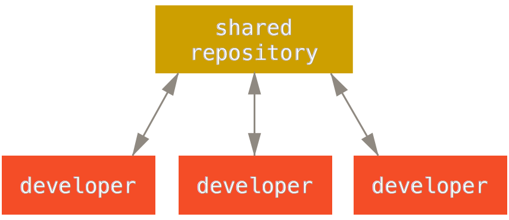 --- class: center, middle # A distributed revision control system ### Integration manager workflow 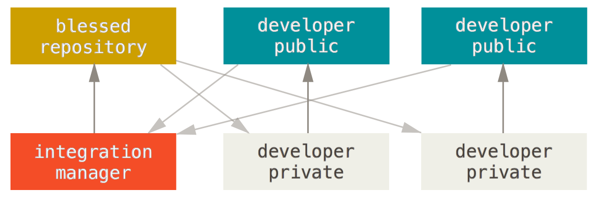 --- class: center, middle # A distributed revision control system ### Dictator and Lieutenants workflow 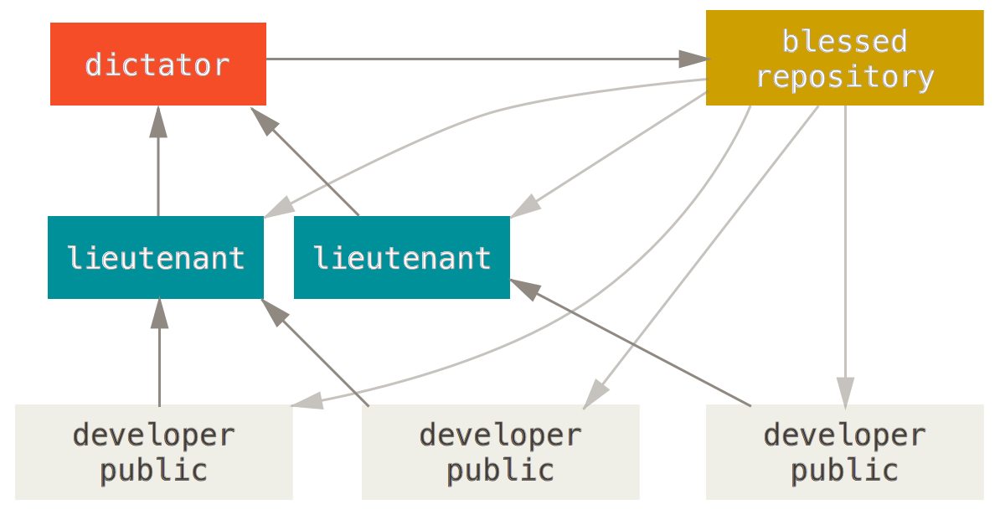 --- # A distributed revision control system ### Use a temporary backup repository to store WIP * Why not rsync ? * Do not copy untracked/generated files, track useful files * Ability to push a single branch * Create a new repository on a remote server ```bash $ ssh remote "git init --bare repo.git" ``` * Register this remote in your local repository ```bash $ git remote add wip ssh://remote/absolute/path/repo.git ``` * Push current work in the WIP repository ```bash $ git push --all wip ``` --- # A distributed revision control system ### Use a temporary backup repository to store WIP * Do some work ```bash $ git commit ... ``` * Push work on the WIP remote ```bash $ git push wip master ``` * Continue to work ```bash $ git commit --amend $ git rebase -i ... ``` * Once work is done push to the stable repository ```bash $ git push origin master ``` --- class: center, middle # Git basics [Pro Git, [chapter 2](http://git-scm.com/book/en/v2/Git-Basics-Getting-a-Git-Repository)] --- class: middle # Start to work 1. Create an empty (sandbox) repository ```bash $ git init --bare /tmp/sandbox.git ``` 2. Clone the repository ```bash $ git clone file:///tmp/sandbox.git ``` 3. Start to work in the master branch ```bash $ cd /tmp/sandbox $ git checkout -b master ``` --- class: center, middle # State of the repository [Pro Git, [chapter 2.2](http://git-scm.com/book/en/v2/Git-Basics-Recording-Changes-to-the-Repository)] --- # State of the repository * State of the repository in long format ```bash $ git status Changes to be committed: new file: staged_file deleted: file Changes not staged for commit: modified: modified_file Untracked files: new_file ``` * State of the repository in short format ```bash $ git status -s # --short D file M modified_file A staged_file ?? new_file ``` --- class: center # State of files 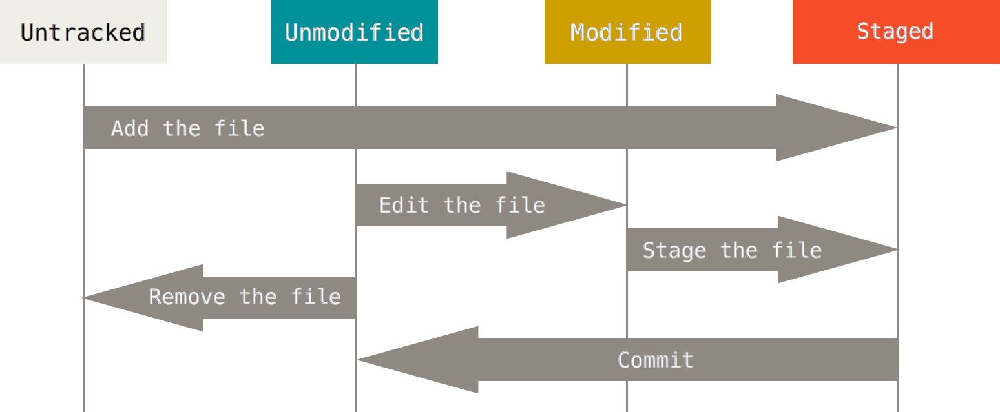 --- class: center # HEAD, index and working dir. 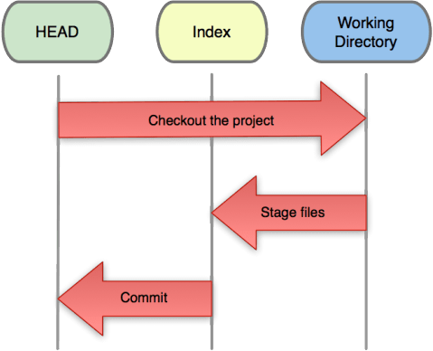 [Git blog, [reset](http://git-scm.com/blog/2011/07/11/reset.html)] --- class: center, middle # Planing modifications [Pro Git, [chapter 2.2](http://git-scm.com/book/en/v2/Git-Basics-Recording-Changes-to-the-Repository)] --- # Staging modifications * Stage only some parts of a file (interactive) ```bash $ git add -p FILE # --patch ``` * Stage all indexed files that has changed ```bash $ git add -u # --update ``` * Stage both modified and untracked files ```bash $ git add -A # --all ``` * Unstage staged files ```bash $ git reset HEAD FILE1 FILE2 .. FILEn ``` --- # Discard local modifications * Discard changes in files ```bash $ git checkout -- FILE1 FILE2 .. FILEn ``` * Undo commit and keep modified/new files in index ```bash $ git reset --soft HEAD^ ``` * Undo commit and remove modified/new files from index ```bash $ git reset HEAD^ ``` * Undo commit and undo changes to indexed files ```bash $ git reset --hard HEAD^ ``` [Pro Git, [chapter 2.4](http://git-scm.com/book/en/v2/Git-Basics-Undoing-Things)] --- # Save repository state w/o commit * Stash some modifications (saves the current diff) ```bash $ git status -s A file M modified_file D removed_file ?? untracked_file $ git stash save $ git status -s ?? untracked_file ``` * List current stashed changes ```bash $ git stash list HEAD is now at ce499bc commit stash@{0}: WIP on test: ce499bc commit stash@{1}: WIP on master: 0029594 commit2 ``` [Pro Git, [chapter 7.3](http://git-scm.com/book/en/v2/Git-Tools-Stashing-and-Cleaning)] --- # Save repository state w/o commit * Display a specific stash ```bash $ git stash show stash@{0} # -p to show in diff format file | 1 + modified_file | 2 +- removed_file | 0 3 files changed, 2 insertions(+), 1 deletion(-) ``` * Apply stashed changes (apply diff) ```bash $ git stash apply # stash@{0} $ git status -s A file M modified_file D removed_file ?? untracked_file ``` * Create a new branch and apply stashed changes in the top of it ```bash git stash branch # stash@{0} ``` --- class: center, middle # Save modifications --- # Commit changes * Commit and specify message on the CLI ```bash $ git commit -m 'message' ``` * Skip the staging area ```bash $ git commit -m "message" -a # ~ git add -a && commit ``` * Select what to commit (interactive) ```bash $ git commit -m "message" -p # ~ git add -p && commit ``` * Rewrite (amend) the last commit (staged files will be added in the commit) ```bash $ git commit --amend # --no-edit ``` --- class: center, middle # View modifications --- # View modifications * View unstaged modifications ```bash $ git diff ``` * View staged modifications ```bash $ git diff --cached ``` * View modifications between two branches ```bash $ git diff master..develop $ git diff origin/develop..develop ``` * View changes of a specific file ```bash $ git diff -- filename $ git diff master..develop -- filename ``` --- # View modifications * Summary of changes ```bash $ git diff --stat ``` * Show ~bitwise diff ```bash $ git diff --color-words ``` * View changes of a specific commit ```bash $ git show HEAD~ ``` * Show the content of a file in a specified version ```bash $ git show HEAD~:filename $ git show fa616be:filename ``` --- class: center, middle # Explore the history [Pro Git, [chapter 2.3](http://git-scm.com/book/en/v2/Git-Basics-Viewing-the-Commit-History)] --- # Exploring the history * Show the history of another branch in short version ```bash $ git log --oneline branchname ``` * Show the history with branch names ```bash $ git log --decorate # git config --global log.decorate true ``` * Show graph version of the history ```bash $ git log --graph # --all to display every branches ``` * Summary of history gouped by author ```bash $ git shortlog ``` --- # Specifying revisions * The previous commit: `HEAD^`, `HEAD~`, `HEAD^1` * The previous commit of the _develop_ branch: `develop~1` or `develop^1` * Two commit before _fa616be_: `fa616be~2` or `fa616be^^` * Three commit before this commit: `HEAD~3` or `HEAD^^^` ```bash Commit tree Revisions G H I J A = = A^0 \ / \ / B = A^ = A^1 = A~1 D E F C = A^2 = A^2 \ | / \ D = A^^ = A^1^1 = A~2 \ | / | E = B^2 = A^^2 \|/ | F = B^3 = A^^3 B C G = A^^^ = A^1^1^1 = A~3 \ / H = D^2 = B^^2 = A^^^2 = A~2^2 \ / I = F^ = B^3^ = A^^3^ A J = F^2 = B^3^2 = A^^3^2 ``` [[git rev-parse manual](http://git-scm.com/docs/git-rev-parse), section _SPECIFYING REVISIONS_] --- class: center, middle # Work in team [Pro Git, [chapter 2.5](http://git-scm.com/book/en/v2/Git-Basics-Working-with-Remotes) and [chapter 5.2](http://git-scm.com/book/en/v2/Distributed-Git-Contributing-to-a-Project)] --- # Download and upload changes * Push several new branches on the remote ```bash $ git push origin branchname name:othername HEAD:name ``` * Delete a branch from the remote ```bash $ git push origin :branchname ``` * Delete local branches that track deleted remote branches ```bash $ git fetch origin -p # --prune ``` * Fetch changes from a branch in a specific branch ```bash $ git fetch origin master:updated_master ``` [Pro Git, [chapter 3.5](http://git-scm.com/book/en/v2/Git-Branching-Remote-Branches)] --- # Working with remotes Local view ```bash $ find .git/refs -type f .git/refs/heads/localbranch .git/refs/heads/master .git/refs/remotes/origin/master .git/refs/remotes/origin/remotebranch ``` Classic state ```bash C1 C2 C3 uri:///project.git/refs/heads/master ----*----*----* (remote,read-write) C1 C2 refs/remotes/origin/master --------------*----* (local,read-only) C1 refs/heads/master -----------------------* (local,read-write) ``` --- # Fetch and Pull Fetch (`git fetch origin master`) ```bash C1 C2 C3 uri:///project.git/refs/heads/master ----*----*----* (remote,read-write) | update C1 C2 v refs/remotes/origin/master --------------*----*====* (local,read-only) C3 C1 refs/heads/master -----------------------* (local,read-write) ``` Pull (`git pull origin master` or `git fetch origin master:master`) ```bash C1 C2 C3 uri:///project.git/refs/heads/master ----*----*----* (remote,read-write) | update C1 C2 v refs/remotes/origin/master --------------*----*====* (local,read-only) | merge C1 v refs/heads/master -----------------------*====*====* (local,read-write) C2 C3 ``` --- # Discard remote modifications * Revert commits (applies the reverse diffs) ```bash $ git revert COMMIT1 COMMIT2 .. COMMITn $ git push origin ``` * Override a remote branch with a local one (TO AVOID) ```bash $ git rebase -i ... # rewrite history $ git push -f origin branch # Prepare yourself to be punched by co-workers ``` --- class: center, middle # Working with branches [Pro Git, [chapter 3](http://git-scm.com/book/en/v2/Git-Branching-Branches-in-a-Nutshell)] --- # Working in branches ```bash $ git branch testing ``` 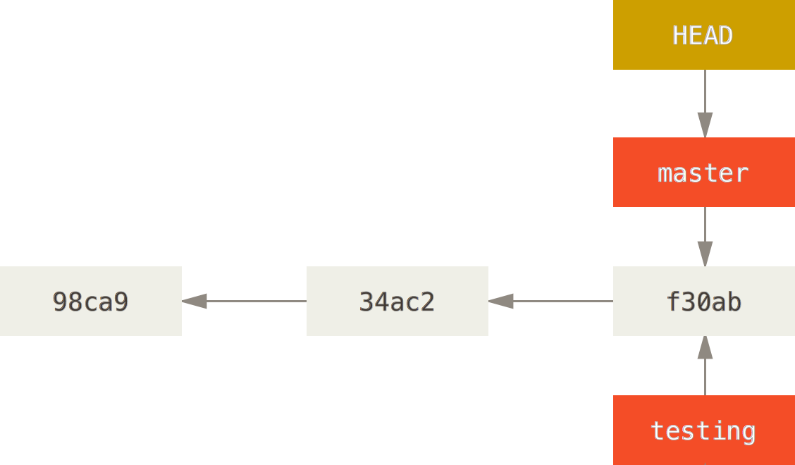 --- # Working in branches ```bash $ git checkout testing ``` 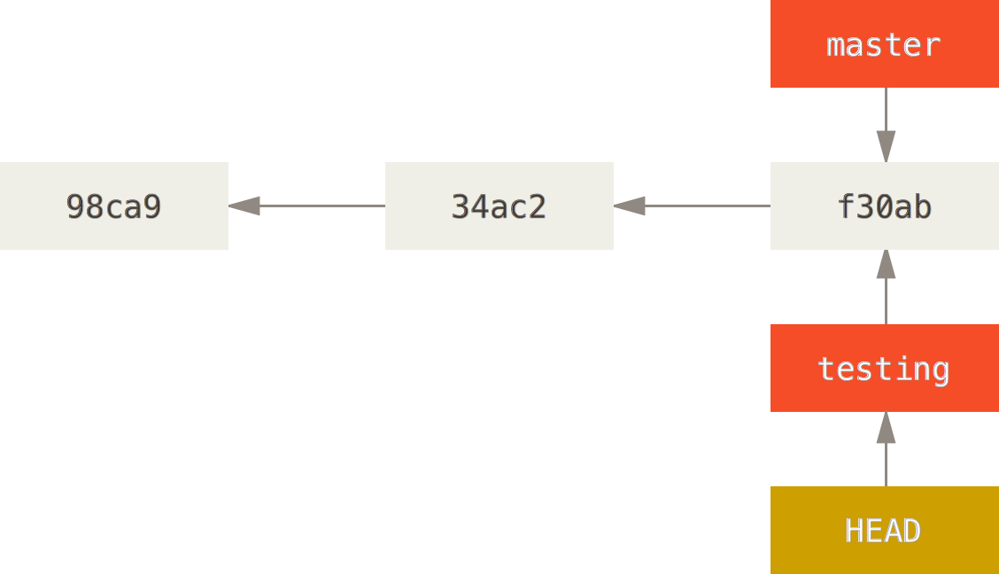 --- # Working in branches ```bash $ git add ... && git commit ... # in testing ``` 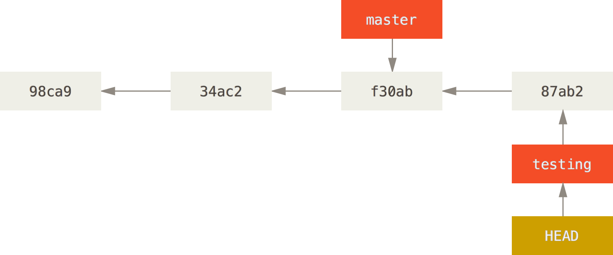 --- # Working in branches ```bash $ git checkout master ``` 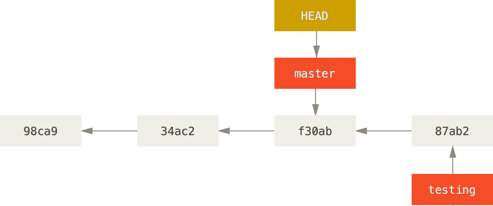 --- # Working in branches ```bash $ git add ... && git commit ... # in master ``` 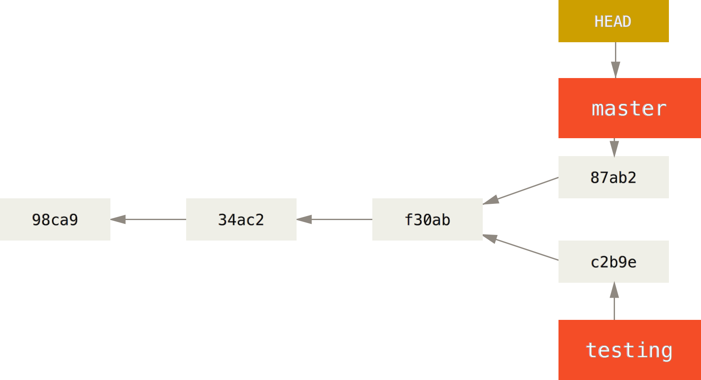 --- # Working with branches * Show history of HEAD's values (find deleted/reseted branch) ```bash $ git reflog ``` * Create and checkout a new branch based on an existing one ```bash $ git checkout -b feature origin/master ``` * Checkout a new empty branch ```bash $ git checkout --orphan newbranch $ git rm -r --cached . ``` * Clean: remove every local branches that has been merged ```bash git branch --merged master | grep -v '^\*' | xargs -n 1 git branch -d ``` --- class: center, middle # Integrate changes between branches [Pro Git, [chapter 5.3](http://git-scm.com/book/en/v2/Distributed-Git-Maintaining-a-Project)] --- # Integrate changes between branches * Simple divergent history <img src="basic-rebase-1.png" width="80%"/> --- # Integrate changes between branches * Merging ```bash $ git checkout master $ git merge experiment ``` 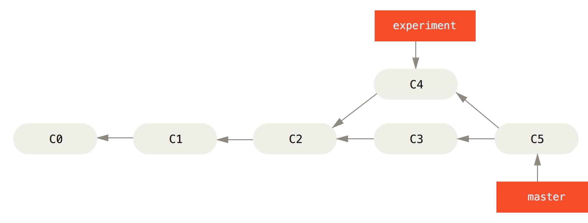 [Pro Git, [chapter 3.2](http://git-scm.com/book/en/v2/Git-Branching-Basic-Branching-and-Merging)] --- # Integrate changes between branches * Simple divergent history <img src="basic-rebase-1.png" width="80%"/> --- # Integrate changes between branches * Rebasing ```bash $ git checkout experiment $ git rebase master ``` 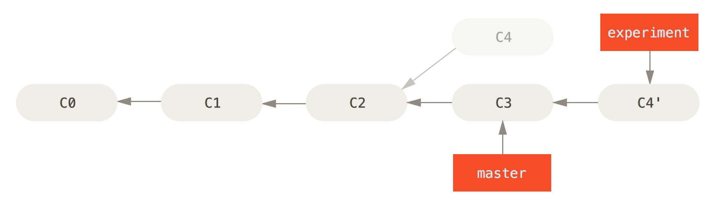 [Pro Git, [chapter 3.6](http://git-scm.com/book/en/v2/Git-Branching-Rebasing)] --- # Integrate changes between branches * Rebasing ```bash $ git checkout master $ git merge --ff experiment ``` 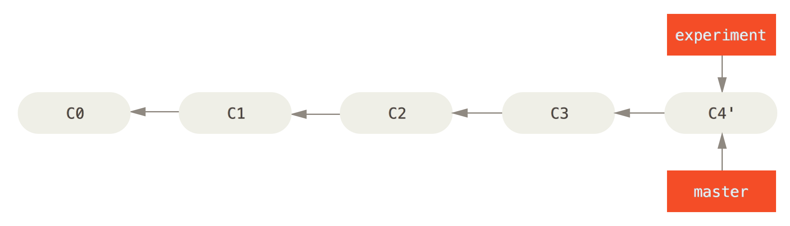 --- # Integrate changes between branches * Complex divergent history 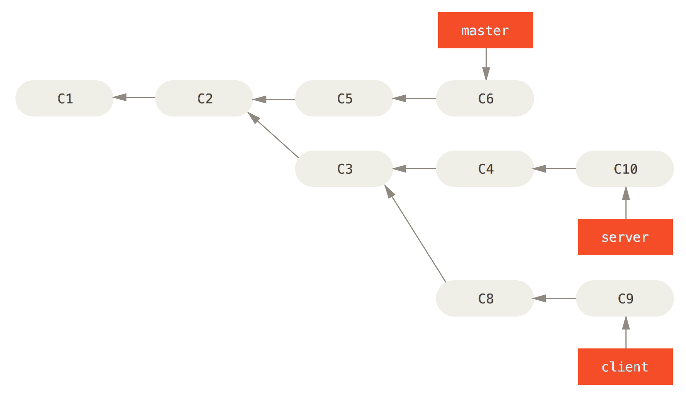 --- # Integrate changes between branches * Rebase a branch onto another ```bash $ git rebase --onto master server client ``` 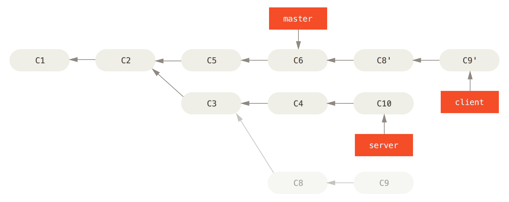 --- # Integrate changes between branches * Rebase a branch onto another ```bash $ git checkout master $ git merge --ff client ``` 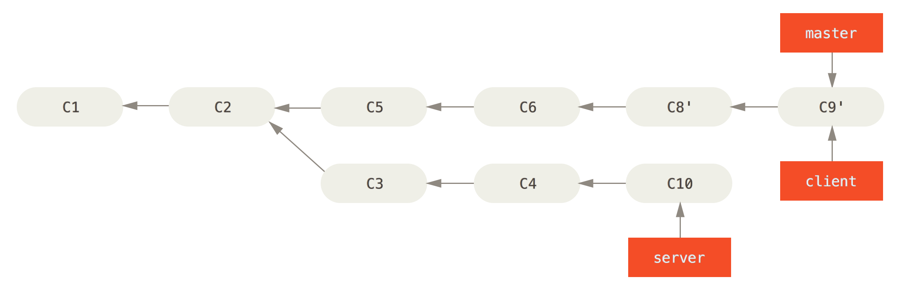 --- # Integrate changes between branches * Another simple divergent history 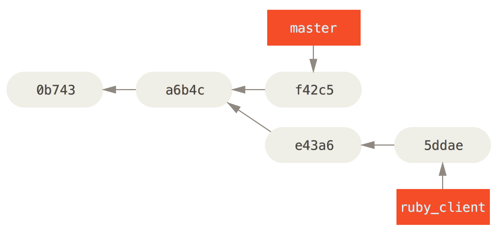 --- # Integrate changes between branches * Cherry-Picking (applies the diff of a commit on another branch) ```bash $ git checkout master $ git cherry-pick e43a6 ``` 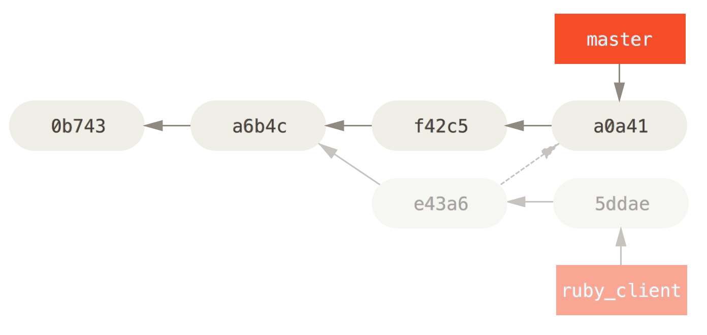 [Pro Git, [chapter 5.3](http://git-scm.com/book/en/v2/Distributed-Git-Maintaining-a-Project)] --- # Integrate changes between branches * Cherry-Picking and keep track of the original commit ```bash $ git checkout master $ git cherry-pick -x db3e256ed4a23c92077aa2f136edab95970e8597 $ git show HEAD commit 841a4e2375b5dc586c283fd4fb6f1f0a9ee443d3 (HEAD, master) Author: Luc Sarzyniec <luc.sarzyniec@xilopix.com> Date: Tue Feb 24 08:27:00 2015 +0100 commit4 (cherry picked from commit db3e256ed4a23c92077aa2f136edab95970e8597) ``` --- class: center, middle # Rewrite history [Pro Git, [chapter 7.6](http://git-scm.com/book/en/v2/Git-Tools-Rewriting-History)] --- # Rewrite history * Rewrite (amend) the last commit ```bash $ # git add ...; git rm ... $ git commit --amend # --no-edit ``` * Rewrite several commits ```bash $ git rebase -i HEAD~3 pick f7f3f6d commit 4 pick 310154e commit 5 pick a5f4a0d commit 6 # Rebase 710f0f8..a5f4a0d onto 710f0f8 # # Commands: # p, pick = use commit # r, reword = use commit, but edit the commit message # e, edit = use commit, but stop for amending # s, squash = use commit, but meld into previous commit # f, fixup = like "squash", but discard this commit's log message # x, exec = run command (the rest of the line) using shell ``` --- # Rewrite history * Rewrite commit messages only ```bash $ git rebase -i HEAD~3 pick f7f3f6d commit 4 reword 310154e commit 5 pick a5f4a0d commit 6 ``` * Re-order commits ```bash $ git rebase -i HEAD~3 pick 310154e commit 5 # <- pick f7f3f6d commit 4 # -> pick a5f4a0d commit 6 ``` * Delete commits ```bash $ git rebase -i HEAD~3 pick f7f3f6d commit 4 pick a5f4a0d commit 6 ``` --- class: center, middle # Rewrite history ### Edit several commits --- # Edit several commits * Select which commit to edit ```bash $ git rebase -i HEAD~3 edit f7f3f6d commit 4 edit 310154e commit 5 pick a5f4a0d commit 6 # Save and quit Stopped at f7f3f6d ... commit 4 You can amend the commit now, with git commit --amend Once you are satisfied with your changes, run git rebase --continue ``` * Rewrite the first commit ```bash # edit files $ git add ... # git rm ... $ git commit --amend ``` --- # Edit several commits * Continue with the second commit ```bash $ git rebase --continue Stopped at 310154e ... commit 5 # edit files $ git add ... # git rm ... $ git commit --amend $ git rebase --continue Successfully rebased and updated refs/heads/master. ``` * Check that everything was done as expected ```bash $ git log --oneline -3 53bb260 commit 4 # SHA1 has changed since files were modified f8765fa new commit 5 # SHA1 has changed since files and message were modified 4fc3652 commit 6 # SHA1 has changed since parents were modified ``` --- class: center, middle # Rewrite history ### Mix commits --- # Mix commits * Select the commits to be mixed (with the previous commit) ```bash $ git rebase -i HEAD~3 pick f7f3f6d commit 4 squash 310154e commit 5 pick a5f4a0d commit 6 ``` * Create a new commit message ```bash # This is a combination of 2 commits. # The first commit's message is: commit 4 # This is the 2nd commit message: commit 5 ``` * Check that everything was done as expected ```bash $ git log --oneline -2 pick f7f3f6d commit 4 and 5 pick a5f4a0d commit 6 ``` --- class: center, middle # Rewrite history ### Insert new commits --- # Insert new commits * Select where to insert the commit (after witch existing commit) ```bash $ git rebase -i HEAD~3 edit f7f3f6d commit 4 edit 310154e commit 5 pick a5f4a0d commit 6 ``` * Add files and create new commits ```bash $ git add ... && git commit -m "commit 4-1" $ git rebase --continue $ git add ... && git commit -m "commit 5-1" $ git add ... && git commit -m "commit 5-2" $ git rebase --continue ``` * Check that everything was done as expected ```bash $ git log --oneline -6 f7f3f6d commit 4 0737964 commit 4-1 310154e commit 5 fa96cb9 commit 5-1 26cd81d commit 5-2 cc4ad9a commit 6 ``` --- class: center, middle # Rewrite history ### Split commits --- # Split commits * Select the commits to split ```bash $ git rebase -i HEAD~3 pick f7f3f6d commit 4 edit 310154e commit 5 pick a5f4a0d commit 6 ``` * Reset the current commit ```bash $ git reset HEAD~ ``` * Create several new commits ```bash $ git add ... $ git commit -m 'first' $ git add ... $ git commit -m 'second' $ git add ... $ git commit -m 'third' ``` --- # Split commits * Continue once it's done ```bash $ git rebase --continue Successfully rebased and updated refs/heads/master. ``` * Check that everything was done as expected ```bash $ git log --oneline -5 f7f3f6d commit 4 66b1120 first afcd336 second 4fc3652 third a5f4a0d commit 6 ``` --- # Automatically rewrite history * Automatically rewrite __all__ the history ```bash git filter-branch --tree-filter 'rm -f passwords.txt' HEAD ``` * Change your email address ```bash git filter-branch --commit-filter ' if [ "$GIT_AUTHOR_EMAIL" = "schacon@localhost" ]; then GIT_AUTHOR_NAME="Scott Chacon"; GIT_AUTHOR_EMAIL="schacon@example.com"; git commit-tree "$@"; else git commit-tree "$@"; fi' HEAD ``` --- class: center, middle # Debugging [Pro Git, [chapter 7.10](http://git-scm.com/book/en/v2/Git-Tools-Debugging-with-Git)] --- # Code introspection * Read the code annotated with commit/line ```bash $ git blame -L 1,10 zlib.c b0613ce0 (Jonathan Nieder 2010-11-06 06:47:34 -0500 1) /* b0613ce0 (Jonathan Nieder 2010-11-06 06:47:34 -0500 2) * zlib wrappers to make sure we don't silently miss errors b0613ce0 (Jonathan Nieder 2010-11-06 06:47:34 -0500 3) * at init time. b0613ce0 (Jonathan Nieder 2010-11-06 06:47:34 -0500 4) */ b0613ce0 (Jonathan Nieder 2010-11-06 06:47:34 -0500 5) #include "cache.h" b0613ce0 (Jonathan Nieder 2010-11-06 06:47:34 -0500 6) 1a507fc1 (Junio C Hamano 2011-06-10 10:31:34 -0700 7) static const char *zerr_to_string(int status) b0613ce0 (Jonathan Nieder 2010-11-06 06:47:34 -0500 8) { 1a507fc1 (Junio C Hamano 2011-06-10 10:31:34 -0700 9) switch (status) { b0613ce0 (Jonathan Nieder 2010-11-06 06:47:34 -0500 10) case Z_MEM_ERROR: 1a507fc1 (Junio C Hamano 2011-06-10 10:31:34 -0700 11) return "out of memory"; b0613ce0 (Jonathan Nieder 2010-11-06 06:47:34 -0500 12) case Z_VERSION_ERROR: 1a507fc1 (Junio C Hamano 2011-06-10 10:31:34 -0700 13) return "wrong version"; 1a507fc1 (Junio C Hamano 2011-06-10 10:31:34 -0700 14) case Z_NEED_DICT: 1a507fc1 (Junio C Hamano 2011-06-10 10:31:34 -0700 15) return "needs dictionary"; 1a507fc1 (Junio C Hamano 2011-06-10 10:31:34 -0700 16) case Z_DATA_ERROR: 1a507fc1 (Junio C Hamano 2011-06-10 10:31:34 -0700 17) return "data stream error"; 1a507fc1 (Junio C Hamano 2011-06-10 10:31:34 -0700 18) case Z_STREAM_ERROR: 1a507fc1 (Junio C Hamano 2011-06-10 10:31:34 -0700 19) return "stream consistency error"; b0613ce0 (Jonathan Nieder 2010-11-06 06:47:34 -0500 20) default: ``` --- # Code introspection * In short format ```bash $ git blame -L 1,10 -s zlib.c b0613ce0 1) /* b0613ce0 2) * zlib wrappers to make sure we don't silently miss errors b0613ce0 3) * at init time. b0613ce0 4) */ b0613ce0 5) #include "cache.h" b0613ce0 6) 1a507fc1 7) static const char *zerr_to_string(int status) b0613ce0 8) { 1a507fc1 9) switch (status) { b0613ce0 10) case Z_MEM_ERROR: 1a507fc1 11) return "out of memory"; b0613ce0 12) case Z_VERSION_ERROR: 1a507fc1 13) return "wrong version"; 1a507fc1 14) case Z_NEED_DICT: 1a507fc1 15) return "needs dictionary"; 1a507fc1 16) case Z_DATA_ERROR: 1a507fc1 17) return "data stream error"; 1a507fc1 18) case Z_STREAM_ERROR: 1a507fc1 19) return "stream consistency error"; b0613ce0 20) default: ``` --- # Code introspection * See where sections of code originally came from ```bash $ git blame -s -C -L 1,20 zlib.c b0613ce0 zlib.c 1) /* 39c68542 wrapper.c 2) * zlib wrappers to make sure we don't silently miss errors 39c68542 wrapper.c 3) * at init time. 39c68542 wrapper.c 4) */ b0613ce0 zlib.c 5) #include "cache.h" b0613ce0 zlib.c 6) 1a507fc1 zlib.c 7) static const char *zerr_to_string(int status) b0613ce0 zlib.c 8) { 1a507fc1 zlib.c 9) switch (status) { b0613ce0 zlib.c 10) case Z_MEM_ERROR: 1a507fc1 zlib.c 11) return "out of memory"; b0613ce0 zlib.c 12) case Z_VERSION_ERROR: 1a507fc1 zlib.c 13) return "wrong version"; 1a507fc1 zlib.c 14) case Z_NEED_DICT: 1a507fc1 zlib.c 15) return "needs dictionary"; 1a507fc1 zlib.c 16) case Z_DATA_ERROR: 1a507fc1 zlib.c 17) return "data stream error"; 1a507fc1 zlib.c 18) case Z_STREAM_ERROR: 1a507fc1 zlib.c 19) return "stream consistency error"; b0613ce0 zlib.c 20) default: ``` --- # Track a bug using binary search * Start to search, specify the commit of the last working version ```bash $ git bisect start HEAD v2.2.0 Bisecting: 150 revisions left to test after this (roughly 7 steps) ``` * At each step specify if the current snapshot is working or not ```bash # Do some tests $ git bisect good Bisecting: 75 revisions left to test after this (roughly 6 steps) # Do some tests $ git bisect bad Bisecting: 37 revisions left to test after this (roughly 5 steps) # ... ``` * Find the version that introduced the bug (-> read the diff to understand) ```bash # ... bcbdeb1a1256f777e52192fa7da0f7dbad680162 is the first bad commit $ git show -p bcbdeb1a1256f777e52192fa7da0f7dbad680162 ``` --- # Track a bug automating binary search * Find a command or create a script to reproduce the bug ```bash rake test # ? ``` * Start the binary search ```bash $ git bisect start HEAD v2.2.0 ``` * Use the script to automatically run the binary search ```bash $ git bisect run rake test ``` * Stop the binary search procedure ```bash $ git bisect reset ``` [See [http://lwn.net/Articles/317154/](http://lwn.net/Articles/317154/)] --- class: center, middle # Other useful commands [Pro Git, [chapter 7](http://git-scm.com/book/en/v2/Git-Tools-Revision-Selection)] --- # Other useful commands * Grep in a specific commit ```bash git grep test 49e4c29 49e4c29:lib/disco/common/service.rb: test_connect() 49e4c29:lib/disco/common/service.rb: def test_connect() ``` * Find in which tag a commit was included ```bash $ git describe --tag 49e4c299dc390698724da5d21de853c44737c65c 0.1.0 ``` * Remove untracked files from the working directory ```bash $ git clean # -d to remove directories too ``` * Create an archive of the repository (a commit/tag can be specified) ```bash $ git archive -o soft-2.2.0.tar.gz v2.2.0 ``` --- # Other useful commands * Resolve conflicts using an external (GUI?) tool ```bash $ git mergetool ``` [Pro Git, [chapter 3.2](http://git-scm.com/book/en/v2/Git-Branching-Basic-Branching-and-Merging#_basic_merge_conflicts)] * Share changes saving commits in a bundle file (can be sent by mail, ...) * Create the bundle file ```bash $ git bundle create repo.bundle HEAD master ``` * Load the downloaded bundle file ```bash $ git clone repo.bundle repo ``` ```bash $ git fetch ../commits.bundle master:other-master ``` [Pro Git, [chapter 7.12](http://git-scm.com/book/en/v2/Git-Tools-Bundling)] --- class: middle # Memo ```bash $ git add -p $ git checkout -- FILE $ git reset REV # --soft/--hard $ git stash $ git commit --amend $ git diff REV -- FILE $ git diff --color-words $ git show REV:FILE $ git log --decorate --graph $ git fetch origin BRANCH:OTHER_BRANCH $ git revert REV $ git rebase -i REV $ git cherry-pick -x REV $ git blame FILE $ git bisect REV_END REV_START $ git grep STR REV $ git clean $ git archive -o FILE.tar.gz REV ``` --- class: center, middle # Internals [Pro Git, [chapter 10](http://git-scm.com/book/en/v2/Git-Internals-Plumbing-and-Porcelain)] --- class: middle # Git: content-addressable filesystem * Object database, index = SHA1 hash * Objects are stored in the filesystem under the `.git/objects` directory * Several kind of objects: commit, tree, blob, ... * Objects linking each-other (commits, trees) * Compression on demand or when files are too big --- # Git objects: blobs * Create and store a new blob (file) object: ```bash $ echo "Awesome!" | git hash-object --stdin -w 6d4ed2c98c4fbe835280634af0cbddefffaf7ee6 $ touch file && git hash-object -w file e69de29bb2d1d6434b8b29ae775ad8c2e48c5391 ``` * Find this object in the filesystem ```bash $ find .git/objects/ .git/objects/6d/ .git/objects/6d/4ed2c98c4fbe835280634af0cbddefffaf7ee6 ``` * Get information about the object ```bash $ git cat-file -t 6d4ed2c98c4fbe835280634af0cbddefffaf7ee6 blob $ git cat-file -p 6d4ed2c98c4fbe835280634af0cbddefffaf7ee6 Awesome! ``` --- # Git objects representation * Content of the file associated to the object ```bash $ cat .git/objects/6d/4ed2c98c4fbe835280634af0cbddefffaf7ee6 xKÊÉOR°dp,O-ÎÏMUä,S ``` * _deflate_ (zip,gzip,zlib,...) decompressed content ```bash $ cat .git/objects/6d/4ed2c98c4fbe835280634af0cbddefffaf7ee6 | \ ruby -r zlib -e "p Zlib::Inflate.inflate(STDIN.read)" "blob 9\x00Awesome!\n" ``` * Calculation of the SHA1 hash associated of the object ```bash $ ruby -r digest/sha1 -e 'p Digest::SHA1.hexdigest("blob 9\x00Awesome!\n")' "6d4ed2c98c4fbe835280634af0cbddefffaf7ee6" ``` --- # Git objects: commits and trees * Content of a commit object ```bash $ git cat-file -p $(git rev-parse HEAD) # 00c4dfee3c28787870d2574a50c5de3725d5fcfb tree 4814e377c18f2da9cce56631f24e0d09181b0feb parent e8a0d201e0b701d7c2de28cb33fa03ef59b22506 author Luc Sarzyniec <luc.sarzyniec@xilopix.com> 1424853891 +0100 committer Luc Sarzyniec <luc.sarzyniec@xilopix.com> 1424853895 +0100 Commit message ``` * Content of a tree object ```bash $ git cat-file -p $(git rev-parse HEAD^{tree}) # 4814e377c18f2da9cce56631f24e0d09181b0feb 040000 tree e4af7700f8c091d18cc15f39c184490125fb0d17 dir 100644 blob e69de29bb2d1d6434b8b29ae775ad8c2e48c5391 file1 100644 blob e69de29bb2d1d6434b8b29ae775ad8c2e48c5391 file3 $ git cat-file -p e4af7700f8c091d18cc15f39c184490125fb0d17 100644 blob e69de29bb2d1d6434b8b29ae775ad8c2e48c5391 file2 ``` --- class: middle # A commit 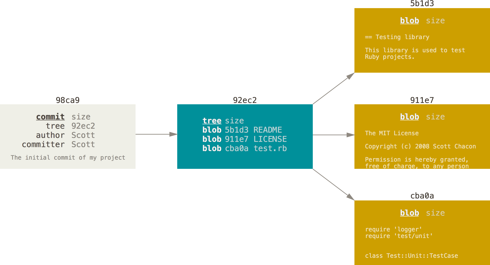 --- class: middle # History <img src="commits-and-parents.png" width="100%"/> --- class: middle # Branches 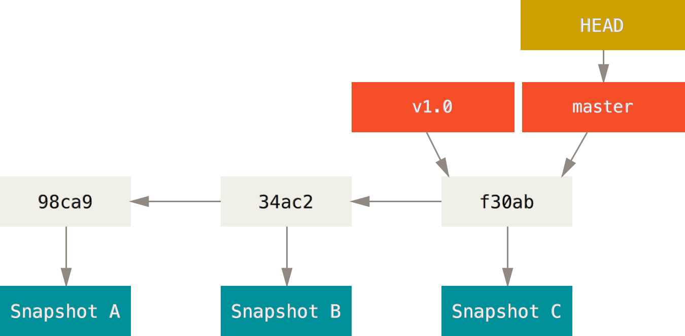 --- # Branches * Branch = pointer on a commit object ```bash $ cat .git/refs/heads/master 7f4ba4b6e3ba7075ca6b379ba23fd3088cbe69a8 ``` * HEAD = pointer on the current branch ```bash $ cat .git/HEAD ref: refs/heads/master ``` * Create a branch ```bash $ echo 7f4ba4b6e3ba7075ca6b379ba23fd3088cbe69a8 > .git/refs/heads/test ``` * Local and remote branches ```bash $ find .git/refs -type f .git/refs/remotes/origin .git/refs/remotes/origin/HEAD .git/refs/remotes/origin/master .git/refs/heads/master ``` --- class: middle, center # Thank you !